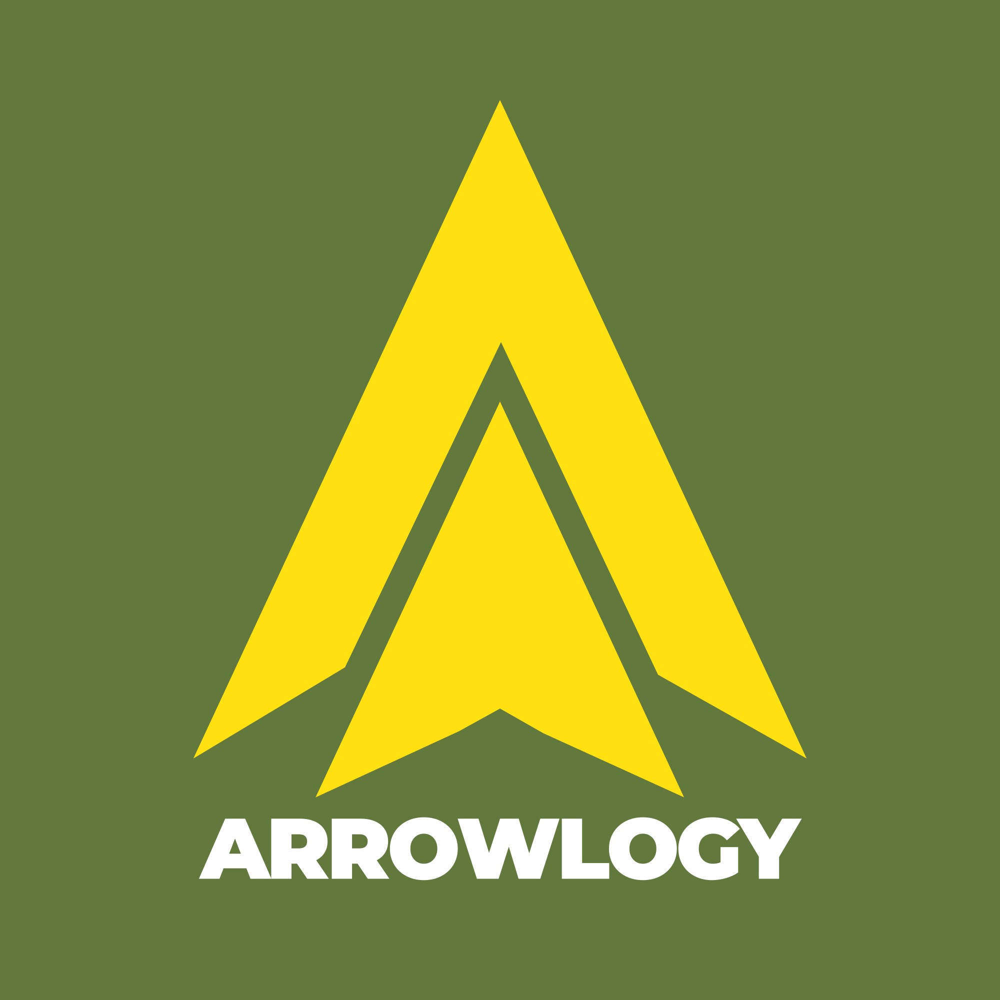

An AI editing assistant
Describe the edit the way you'd text a friend — “remove the long pauses,” “keep the best takes.” Arrowlogy's built-in assistant makes it happen, with no scripting or manual cuts.

AI-powered video editor · free & open source · works offline
Arrowlogy is a video editor with an AI assistant built in. Tell it what you want — “cut the silences,” “add captions” — and it does the work on your own computer. No uploads, no account, no cloud. Your footage never leaves your Mac.
What it does
Four things, all done on your own computer — no cloud, no subscriptions.
Describe the edit the way you'd text a friend — “remove the long pauses,” “keep the best takes.” Arrowlogy's built-in assistant makes it happen, with no scripting or manual cuts.
Spoken words are turned into captions right on your Mac. It's fully local, so it works offline, it's fast, and there are no per-minute fees or uploads.
Multiple tracks for video, audio and captions — trim, split, drag and layer clips just like the pros, with an AI helper when you want shortcuts.
Finishes render quickly using your Mac's hardware, in quality ready for YouTube, social media or wherever you share your work.
Why Arrowlogy
Most video tools upload your footage to a cloud. Arrowlogy takes the opposite approach.
Your videos never leave your computer. No uploads, no cloud storage, no account required — your footage stays where it belongs: on your Mac.
No API keys, no account, no trial clock. Download Arrowlogy and you can start editing immediately. Paid AI providers are optional extras later — nothing is required to begin.
Transcription, editing and the AI assistant all run locally. Take your Mac anywhere — no internet required to get the work done.
Arrowlogy is open source under the AGPL-3.0 license. It's free now and stays free — and you (or a developer) can always see exactly how it works.
See it working
One window: clips on the left, your video in the middle, and an assistant on the right that can edit by conversation.
Version 0.2.17 · Apple Silicon (M1 or newer) · ~700 MB download
Download for macOSThis build is ad-hoc signed and not Apple-notarized. The first-launch Gatekeeper warning is expected on the free distribution path. We do not claim Developer ID or notarization.
Auto-updates check GitHub releases for this channel. Optional paid Apple signing can come later — not required to use Arrowlogy™ today.